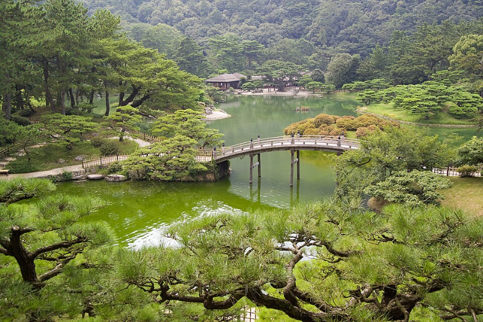
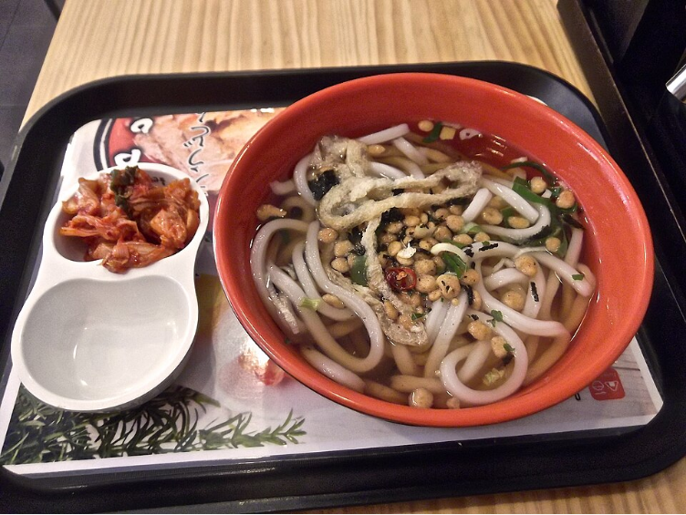
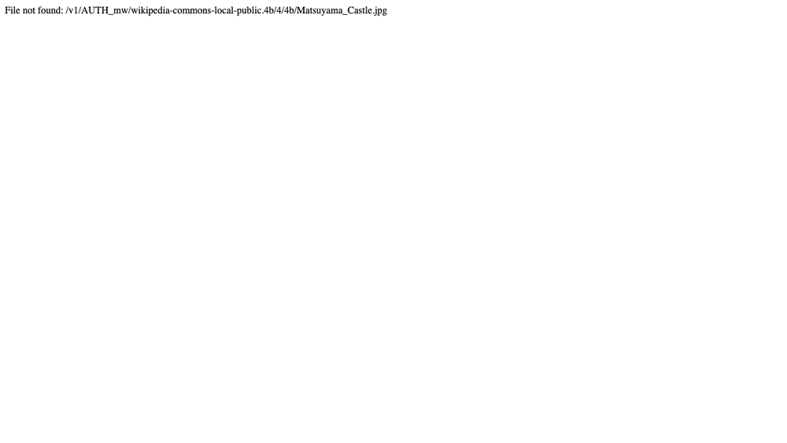
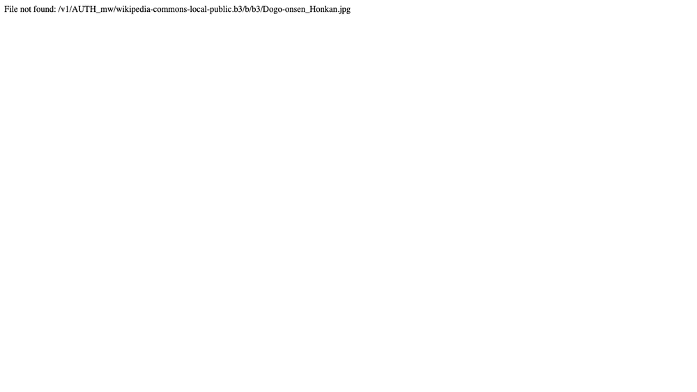
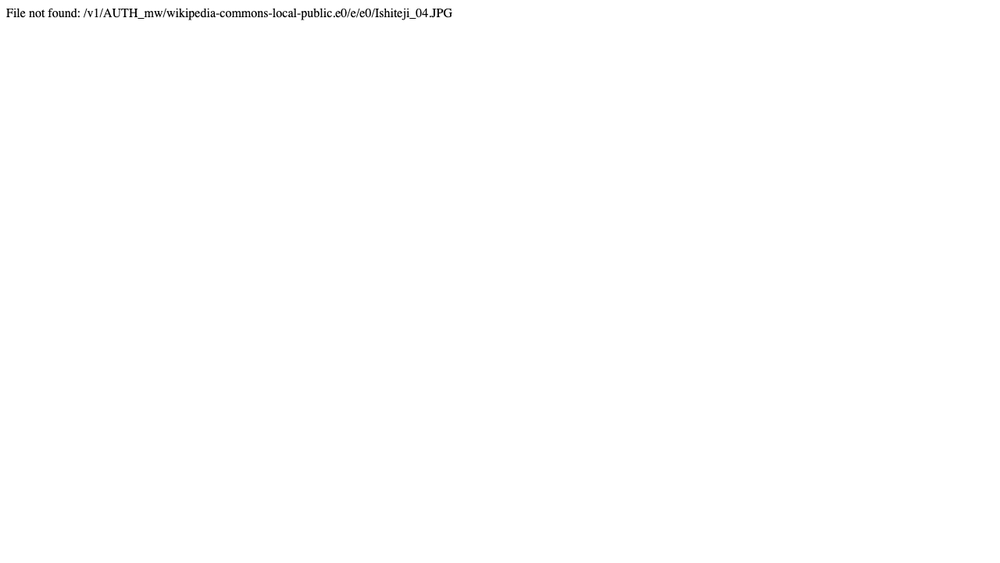
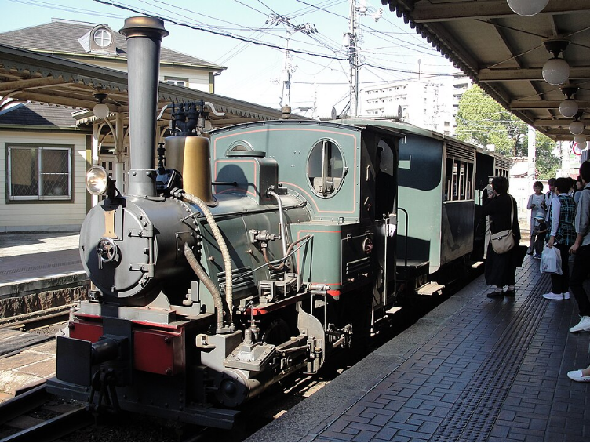

日本四國五天四夜家族之旅
規劃日期： 2026年3月21日
旅程亮點： 歷史寺廟、古老溫泉、自然美景、烏龍麵體驗，適合家庭共樂。
同行成員： YM夫婦 (2大人)、女兒 (15歲)、兒子 (10歲) - 共4人
交通建議： 四國地區景點較為分散，考量家庭出遊的便利性與彈性，建議租賃汽車自駕，可大幅提升旅遊品質。
行程總覽
Day 1: 抵達香川 - 栗林公園與烏龍麵體驗


- 上午： 抵達香川縣高松機場 (TAK)，領取租賃汽車。
- 中午：： 前往高松市區，享用道地讚岐烏龍麵作為午餐。
- 下午： 漫步於米其林綠色指南三星景點 — 栗林公園，欣賞優美的日式庭園風光 (適合全家散步)。
- 傍晚： 體驗中野烏龍麵學校，親手製作烏龍麵 (家庭趣味活動，需預約)。
- 晚上： 入住高松市區飯店，自由晚餐。
今日亮點： 經典日式庭園、親手做烏龍麵。
Day 2: 香川 - 金刀比羅宮與善通寺巡禮
- 上午： 前往金刀比羅宮，挑戰著名的千階石階，沿途可欣賞風景與參道商店街。抵達本宮後，可祈求海上交通平安。
- 中午： 在金刀比羅宮附近享用午餐，品嚐當地特色料理。
- 下午： 參訪弘法大師空海的誕生地 — 善通寺 (四國遍路第75番)，感受莊嚴的寺廟氛圍與歷史建築。
- 傍晚： 入住金比羅溫泉鄉飯店，享受舒適的溫泉，舒緩爬階的疲勞。
- 晚上： 飯店內享用晚餐或附近餐廳。
今日亮點： 信仰之地、千年古寺、溫泉放鬆。
Day 3: 前往愛媛 - 松山城與道後溫泉


- 上午： 自香川駕車前往愛媛縣松山市 (約1.5-2小時車程)。
- 中午： 抵達松山市區，享用午餐。
- 下午： 登日本百名城之一的松山城，可搭乘纜車或吊椅上山，俯瞰市景 (10歲兒子會喜歡)。參觀天守閣內部，感受戰國歷史。
- 傍晚： 前往日本最古老的溫泉 — 道後溫泉。參觀標誌性的道後溫泉本館 (外觀神似《神隱少女》湯屋)。
- 晚上： 入住道後溫泉區的溫泉旅館，晚餐後再次享受道後溫泉的獨特氛圍。逛逛道後溫泉商店街。
今日亮點： 歷史名城、日本三大古湯。
Day 4: 愛媛 - 石手寺與松山市區文化體驗


- 上午： 參訪石手寺 (四國遍路第51番)，以其仁王門 (國寶) 和獨特的洞窟遍路體驗聞名，感受千年古剎的莊嚴與神秘。
- 中午： 在松山市區享用午餐。
- 下午： 搭乘復古可愛的少爺列車，感受夏目漱石筆下的氛圍，穿梭於松山市區。可在大街道商店街自由購物或找尋特色咖啡廳。
- 傍晚： 可選擇前往愛媛縣立砥部動物園 (若孩子對動物感興趣，約需2-3小時)，或繼續在松山市區閒逛。
- 晚上： 在松山市區享用特色晚餐。
今日亮點： 獨特寺廟體驗、復古列車、市區購物。
Day 5: 啟程返家或自由活動
- 上午： 根據您的航班時間，可在松山市區進行最後的購物，或前往附近的景點。
- 中午： 享用午餐後，前往松山機場 (MYJ) 搭機返家。
- 或者： 若航班從高松機場出發，則需提前駕車返回香川高松 (約2-2.5小時車程)，預留充裕時間還車與登機。
今日亮點： 彈性安排、依航班時間調整。
旅遊小提醒
- 航班： 建議選擇高松機場 (TAK) 進、松山機場 (MYJ) 出的航班，可省去走回頭路的時間。若需同一機場進出，則需考慮第五天早點回高松。
- 租車： 提前預訂好適合家庭的車輛，並確認是否需要國際駕照。日本為右駕。
- 溫泉禮儀： 入浴前請先淋浴清潔，長髮需盤起，毛巾不可入浴池。
- 櫻花季： 四月是櫻花盛開的季節，部分景點可能會有人潮，建議提早出發。
- 飲食： 四國烏龍麵、道後溫泉的鯛魚飯、橘子製品等都是必嚐美食。
- 天氣： 四月氣溫舒適，但早晚溫差大，偶有陣雨，請備妥外套與雨具。
希望這份行程能符合您和家人的期待！祝您旅途愉快！
行程內容可依您的實際需求與興趣彈性調整。